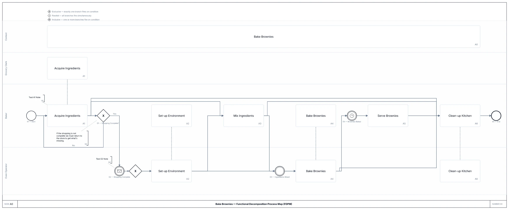
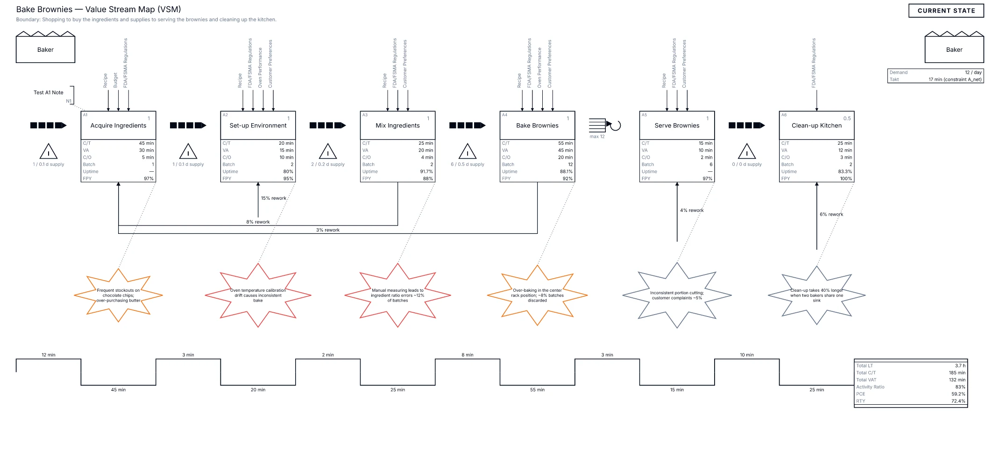
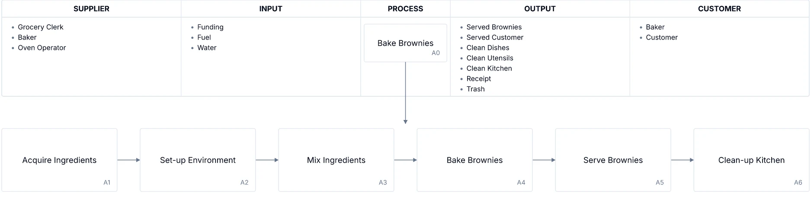

Forester
Process modeling software · product, not publicly launched
2025 – present
- Situation
- Process models drive redesigns and cost cases, but most are drawn by hand as pictures.
- Obstacle
- Hand-drawn models are usually wrong and nobody can tell: two people describe the same handoff differently, inputs appear from nowhere, and at scale no reviewer can hold the whole graph in mind.
- Action
- Built software that captures a process as data, using my decomposition and ICOM method, and draws every diagram from it. A Coach finds contradictions across the model, ranks the fixes, and can complete a missing flow in one click.
- Result
- One model produces 6 diagram languages and 35 metrics across 6 stakeholder lenses. Phase 1 is feature-complete and in use on a live client engagement.
- 18
- Sprints shipped, built solo with AI
- 6
- Diagram languages from one model: IDEF0, BPMN 2.0, VSM, SIPOC, Context, FDPM
- 35
- Metrics across 6 stakeholder lenses, computed rather than hand-summed

A tool that finds nothing proves nothing. This is what working looks like.






Not publicly launched; the product name is not final.
Builder’s notes
How I built this
- Problem
- The method only scaled as far as I could. For 30+ years my process work ran on one method: decompose the work, then at every step capture who supplies and receives what, the inputs, controls, outputs, and mechanisms, and the time and value in each step.
- Approach
- Capture the model once and compute every diagram from it. Forester is a web app: a React and TypeScript workspace, a FastAPI backend, and Postgres. You build the process as a tree, edit it as a tree, a spreadsheet, or one step at a time, and every diagram and metric is computed from that single model: flow efficiency, rolled throughput yield, sigma level, Cp and Cpk, required staffing, equipment effectiveness, and the cost of poor quality.
- Key decisions
- Store each arrow once.
- One data model. Each input, control, output, or mechanism arrow is stored once, and is at the same time an edge in every diagram and an input to the metric roll-ups.
- Every metric written twice and checked. Each formula exists in TypeScript for the screen and Python for the server, locked to shared test fixtures so the two can’t drift, and governed by one canonical metric catalog.
- One owner for every fact. Each kind of fact, from the database schema to the roadmap, has exactly one document that owns it, and a change to the code updates its owner in the same commit.
- What went wrong
- Real client work found what demo models didn’t. The first paying engagement modeled in Forester exposed that the order of steps in the BPMN export was inferred from the tree rather than declared.
- Next
- The interview is still ahead. The feature that matters most, an AI interviewer that runs the conversation I used to run by hand and captures the model as it goes, isn’t built yet.
How I evaluate it
- When
- May to July 2026
- The lesson
- A claim about a model is a test, not an argument.
- What I tested
- 12 blind Claude Sonnet runs in a 2 × 2 × 3 design, testing how a future interview agent reads field names.
- Result
- Given a field named
_pctand no stated scale, Claude wrote 15 for 15% in 3 of 3 trials, 100× too large. Named_rate, it wrote 0.15 every time. The build changed: a generated field reference behind a drift gate. - Then
- Engine-generated test cases had locked in the engine’s own bugs, so the Coach’s checklists are now written by hand.
- Carried forward
- Run the experiment, and write down the expected answer before the engine runs.
Documentation
A process-modeling workspace that turns one captured model into six diagram types and a full Lean Six Sigma metric stack. Phase 1 is a private, single-user product that is feature-complete and being hardened; it is not publicly available.
- Workspace
- Tree, spreadsheet, and per-step editors over one model; an entities admin view; and the Coach, which flags methodology gaps on every view with one-click fixes.
- Metrics
- Flow, quality, capability, capacity, equipment, and economic lenses, each read in its stakeholder’s language, from process cycle efficiency to cost of poor quality.
- Import and export
- JSON, CSV, Excel, and BPMN 2.0 in; PNG, PDF, SVG, Excel, CSV, BPMN, and a lossless JSON backup out.
- Stack
- React 18 and TypeScript, FastAPI and Python, Neon Postgres with row-level security, pure SVG diagram rendering, Vercel.
- Quality
- 3,293 automated tests (1,179 Python, 2,114 TypeScript), metric parity fixtures, and 31 architecture decision records.
Not yet built: the AI interviewer, multi-customer accounts, and the executive dashboards. The code is proprietary and not public.